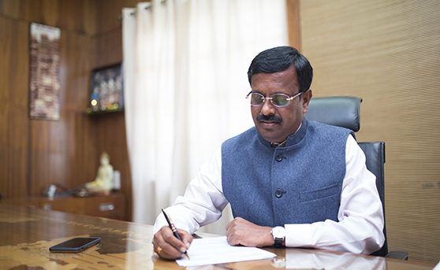
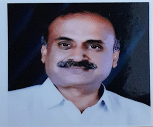
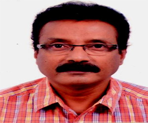
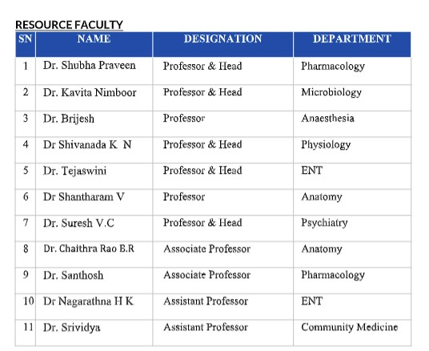

Management

Mr. K. Muniraju
Founder Secretary, AIS
AIMSRC strives to fulfil their mission of providing high-quality
medical science higher education.
Built upon the foundational value of "Transparency in
Administration", AIMSRC was founded under the Akash Education &
Development Trust. The college offers top-notch academic
infrastructure and high-tech facilities for the overall growth
and development of our medical students
Through the implementation of security measures, we strongly
oppose all or any misconduct on campus. We believe in working
together and collaborating in harmony. The hospital provides a
variety of health services at an affordable cost to meet the
requirements of the community, as well as provide a practical
learning experience for our students.
We work hard to promote positive interpersonal skills and
equality among all our students, regardless of their background,
race, community, or economic status. The Institute encourages
students to indulge in self-learning by providing exceptional
learning resources, experienced professors, advanced facilities,
and practical experiences
Administration

DR. SHIVAPRAKASH N C
Principal
Contact No : 9980977699
Email : aimsrcprincipaloff@gmail.com

DR KAILASH N
Medical Superintendent & Professor of ENT
Contact No : 98451-55000
Email : msaimsrc2019@gmail.com
Medical Education Unit
Medical Education Unit Members
The core group of Medical Education Unit for Academic Year
2020-21
Office Incharge : Dr. Shivprakash N C (Principal &
Professor, Department of Pediatrics)
Coordinator : Dr. Anitha M.R (Professor & Head ,
Department of Anatomy)

Programs
01FACULTY DEVELOPMENT PROGRAMME (FDP)
02UNDERGRADUATE ORIENTATION PROGRAMME
Undergraduate students, once enrolled, go through a
week-long orientation programme aimed at sensitizing them
about adult learning principles, time and stress
management, health scenario of the country, respect to
patients, etc.
03FEEDBACK
There is a system in place for obtaining and compiling
student feedback about faculty members.
04INTERNS AND POSTGRADUATE ORIENTATION
Interns and postgraduates are exposed to lateral learning
of medico-legal issues, waste management, hospital safety
and communication skills.
05MENTORSHIP PROGRAMME
An important part of the student support mechanism, this
programme puts in place an effective mentor-mentee system
and offers students support, guidance and encouragement
06SYNOPSIS EVALUATION AND GUIDANCE
The members of MEU evaluate the synopsis submitted by PG
students to undertake research for dissertation.
07 IN-HOUSE WORKSHOPS
The faculty is constantly encouraged to use effective and
updated teaching techniques taught in these workshops.
These include methods like e-learning, simulation,
standardized patients, small group teaching, advances in
assessment methods, educational research, etc.
08PEER EVALUATION
The MEU organises evaluation of faculty members by peers,
providing feedback to the faculty and inputs to the
administrators.